Data publicării: 19.01.2018
Autor articol: Mircea Vaida
1. Aplicatia Cipher – Integrarea cifrurilor într-o aplicaţie dedicata
1.1 Aplicatia Cipher
Aplicaţia Cypher a fost dezvoltată folosind limbajul Java si API-ul BioJava. Ea implementează algoritmii prezentaţi cu scopul de a face o comparaţie între timpii de criptare respectiv decriptare ai acestor algoritmi.
In faza precedenta a fost implemenatat aplicaţia SmartCypher în laboratorul Helios [24], pentru a valida algoritmul de criptare alternativ bazat pe ADN propus a fi integrat in DNAProvider, comparativ cu metodele clasice. Testul algoritmului alternativ bazat pe ADN a fost posibil sub S.O. Linux Ubuntu, Oracle/Sun impunand restrictii dezvoltatorilor din afara USA care doresc sa implementeze provideri de securitate integrabili in JCA sub alte SO.
Pentru aplicaţia Cypher a fost dezvoltată o interfaţă grafică asemănătoare pentru a păstra compatibilitatea cu aplicaţia SmartCypher, implementarea făcându-se utilizând si API-ul BioJava.
Interfaţa a fost creată folosind plug-in-ul pentru Eclipse Java IDE Jigloo GUI Builder, dezvoltat de către Cloud Garden. În cazul de faţă s-a utilizat varianta pentru uz necomercial care este gratuită.
Interfaţa conţine un TextArea în care utilizatorul poate introduce textul pe care doreşte să-l cripteze.
Următorul pas este selecţia cifrului.
Disponibile sunt 5 cifruri:
- Des
- TripleDes
- Blowfish
- AES
- Bio
dintre care se poate alege unul folosind butonul radio corespunzător.
În urma apăsării butonului “Cripteaza” se vor afişa în celelalte două chenare textul criptat, respectiv textul după decriptare, precum şi duratele necesare criptării şi decriptării.
In cazul criptării Bio se foloseşte un TextArea suplimentar în care se afişeaza textul codat în cod ADN.
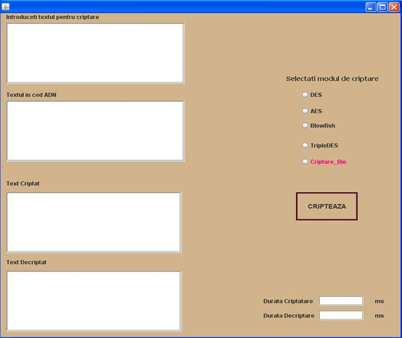
Pentru implementarea cifrului DES s-a construit clasa Criptare_DES în care s-au integrat funcţiile de criptare şi decriptare. Aceste funcţii folosesc API-urile oferite de JCE (Java Cryptography Extension) pentru a apela o instanţă a cifurlui DES.
Key key = KeyGenerator.getInstance(“DES”).generateKey();
Cipher cifru = Cipher.getInstance(“DES”);
In functia de criptare :
cifru.init(Cipher.ENCRYPT_MODE, key);
biti_criptare = cifru.doFinal(datain.getBytes());
In functia de decriptare:
cifru.init(Cipher.DECRYPT_MODE, key);
byte[] date = cifru.doFinal(biti_criptare);
S-a instanţiat un obiect din clasa Cypher şi un obiect din clasa KeyGenerator, ambele primind ca parametru stringul „DES” reprezentând numele algoritmului care se doreşte instanţiat. In fiecare funcţie obiectul din clasa Cipher se iniţializează pentru modul de lucru dorit criptare sau decriptare şi criptarea propriuzisă se face cu metoda „doFinal”.
Pentru implementarea cifrului s-a construit clasa Criptare_AES în care s-au integrat funcţiile de criptare şi decriptare. Aceste funcţii folosesc API-urile oferite de JCE (Java Cryptography Extension) pentru a apela o instanţă a cifurlui AES în mod asemănător implementării cifrului DES.
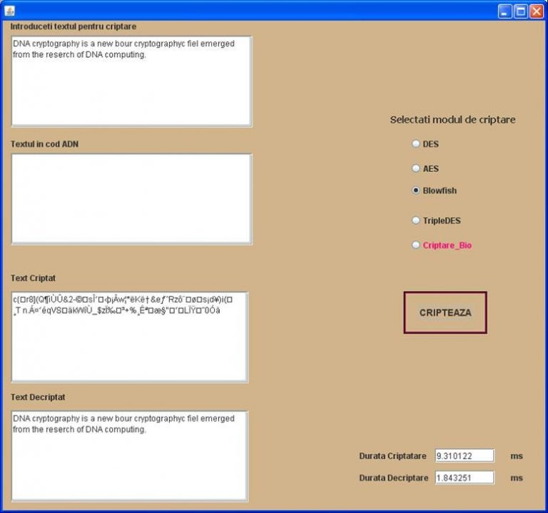
Pentru implementarea cifrului s-a construit clasa Criptare_Blowfish în care s-au integrat funcţiile de criptare şi decriptare. Aceste funcţii folosesc API-urile oferite de JCE (Java Cryptography Extension) pentru a apela o instanţă a cifurlui Blowfish în mod asemănător implementării cifrului DES.
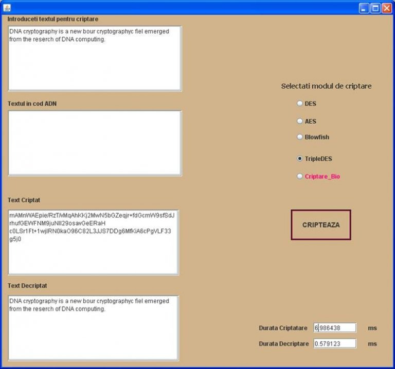
Pentru implementarea cifrului s-a construit clasa Criptare_TripleDES în care s-au integrat funcţiile de criptare şi decriptare. Aceste funcţii folosesc API-urile oferite de JCE (Java Cryptography Extension) pentru a apela o instanţă a cifurlui TripleDES în mod asemănător implementării cifrului DES.
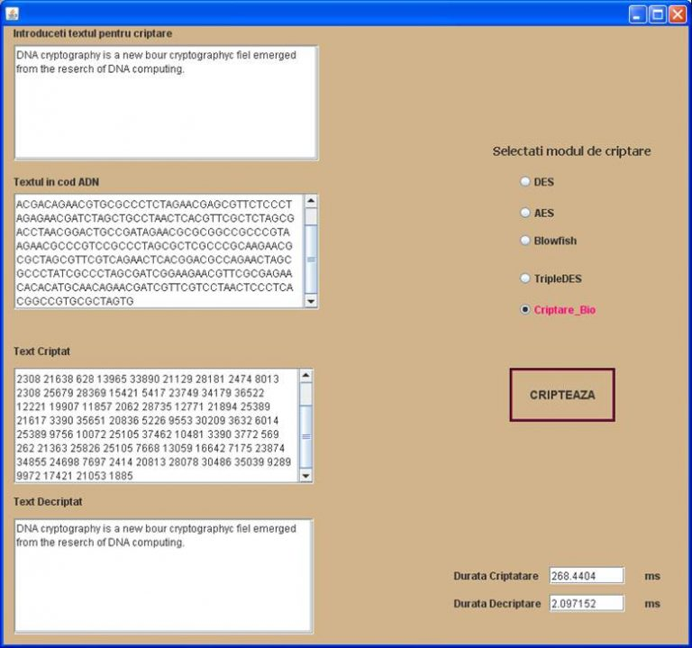
1.2 Testare pentru analiza comparativă a criptarilor
Scopul urmarit in acest caz este de a testa diverşi algoritmi clasici de criptare simetrică şi de a calcula timpii necesari criptării şi decriptării. În scopul criptării s-a ales un text aleator de 360 caractere în format String, unic în cazul tuturor testelor. Secvenţa de testare este:
“k39pc3xygfv(!x|jl+qo|9~7k9why(ktr6pkiaw|gwnn&aw+be|r|*4u+rz$wm)(v_e&$dz|hc7^+p6%54vp*g*)kzlx!%4n4bvb#%vex~7c^qe_d745h40i$_2j*6t0h$8o!c~9x 4^2srn81x*wn9&k%*oo_co(*~!bfur7tl4udm!m4t+a|tb%zho6xmv$6k+#1$&axghrh*_3_zz @0!05u*|an$)5)k+8qf0fozxxw)_upryjj7_|+nd_&x+_jeflua^^peb_+%@03+36w)$~j715*r )x(*bumozo#s^ju)6jji@xa3y35^$+#mbyizt*mdst&h|hbf6o*)r2qrwm10ur+mbezz(1p7$f.”
Pentru a putea calcula intervalul de timp necesar criptării, respectiv decriptării, s-a folosit metoda public static long nanoTime() din clasa System care returnează ora de la momentul respectiv, în nanosecunde.
Pentru a afla timpul necesar criptării, s-au realizat 2 apeluri ale metodei nanoTime() în următorul mod:
long start1=System.nanoTime();
Cipher cifru = Cipher.getInstance(“DES”);
cifru.init(Cipher.ENCRYPT_MODE, key);
biti_criptare = cifru.doFinal(datain.getBytes());
long end1=System.nanoTime();
Primul apel s-a făcut înaintea instanţierii obiectului Cypher iar cel de-al doilea după realizarea criptării. În cazul decriptării s-a procedat similar. Pentru a afla durata necesară celor două operaţii s-a calculat, în ambele cazuri, diferenţa dintre cele două variabile care conţineau informaţii despre momentul în care s-a realizat apelul. Pentru a evita valori foarte mari rezultatul s-a transformat în milisecunde.
Timpii de criptare şi decriptare variază în funcţie de sistemul de operare folosit, de nivelul de încărcare a memoriei în momentul execuţiei testelor şi de modul de gestiune a firelor de execuţie de către diferitele sisteme de operare. De aceea s-a efectuat o analiză a variaţiei timpilor de execuţie a fiecărui algoritm, rulând criptarea de câte 10 ori pe 3 sisteme diferite:
- Sistem1: OS-Windows1 32 biti
- Sistem2: OS-Wiondows2 64 biti
- Sistem3: OS- Ubuntu
S-a efectuat diagrama de comparaţie dintre timpul minim, mediu, maxim şi olimpic a fiecărui algoritm pe cele 3 sistme. Timpul denumit olimpic reprezintă o medie a timpilor de criptare a unui algoritm eliminând minimul şi maximul.
Pentru Sistemul1 cu OS-Windows1-32biti s-au obţinut rezultatele din tabelul şi diagramele de mai jos:
Tabel 1.1. Rezultatele testelor efectuate pe Sistemul 1 cu OS-Windows1
| Rezultatele analizei pentru OS-Windows1 | |||||||||||
| DES | Criptare | 50 | 26 | 1.03 | 0.81 | 0.84 | 28 | 0.95 | 1.29 | 28 | 0.84 |
| Decriptare | 1.63 | 0.35 | 0.33 | 0.32 | 0.34 | 27 | 0.30 | 0.37 | 0.30 | 0.36 | |
| AES | Criptare | 80 | 26 | 0.92 | 0.95 | 0.88 | 28 | 0.91 | 0.6 | 27 | 0.54 |
| Decriptare | 27 | 2.09 | 0.30 | 22.26 | 0 | 0.35 | 0.36 | 2.09 | 2.09 | 0.14 | |
| Blowfish | Criptare | 65 | 10.91 | 25 | 24 | 0.15 | 1.66 | 1.44 | 25 | 2.111 | 1.45 |
| Decriptare | 3 | 1.87 | 1.72 | 29 | 1.09 | 1.37 | 1.13 | 30 | 1.32 | 1 | |
| 3DES | Criptare | 82 | 24 | 2.41 | 25 | 2.12 | 2.46 | 29 | 1.45 | 1.65 | 1.42 |
| Decriptare | 1.56 | 1.42 | 26 | 1.23 | 1.41 | 1.62 | 0.62 | 0.57 | 0.66 | 0.66 | |
| BIO | Criptare | 4091 | 4871 | 4875 | 4969 | 4880 | 4921 | 4964 | 4967 | 4881 | 4932 |
| Decriptare | 6.29 | 4.19 | 4.19 | 4.19 | 4.19 | 25 | 31 | 2.09 | 2.09 | 4.19 | |
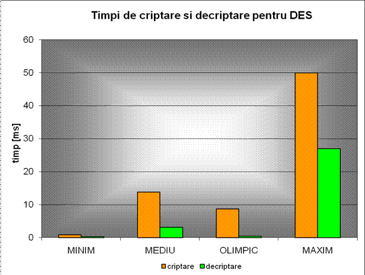
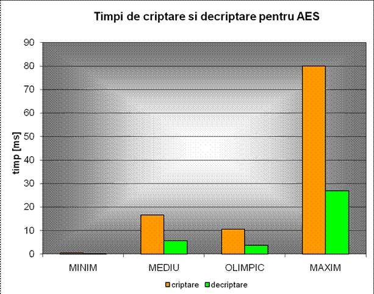
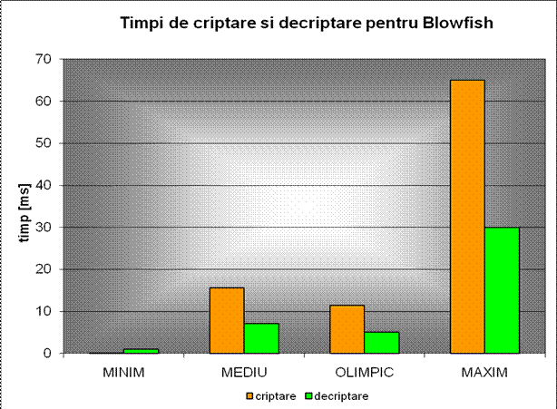
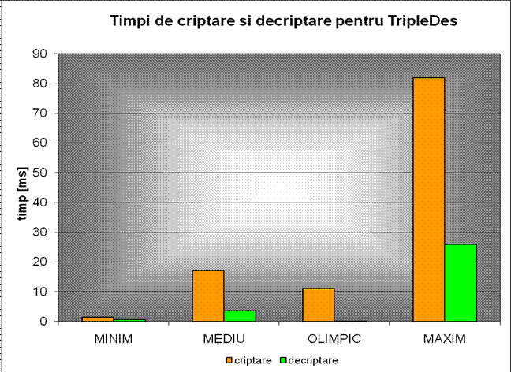
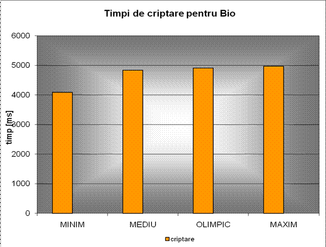
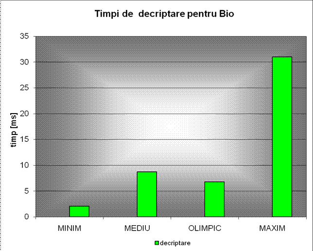
Rezultatele experimentale ale testelor efectuate pe Sistemul2 cu OS-Windows2- 64 biti sunt prezentate în tabelul şi diagramele următoare:
Tabel 1.2. Rezultatele testelor efectuate pe Sistemul 2 cu OS-Windows2
| Rezultatele analizei pentru OS-Windows 7 | |||||||||||
| DES | Criptare | 34 | 1.43 | 1.09 | 1.2 | 1.73 | 1 | 1.11 | 2.8 | 1.22 | 1.19 |
| Decriptare | 0.75 | 0.37 | 0.44 | 0.42 | 0.38 | 0.44 | 0.44 | 0.54 | 0.38 | 0.37 | |
| AES | Criptare | 28 | 1.3 | 1.16 | 0.07 | 1.77 | 2.4 | 2.53 | 0.79 | 0.77 | 0.82 |
| Decriptare | 0.12 | 0.14 | 2.09 | 0.9 | 2.09 | 0.6 | 0.8 | 0.4 | 0.2 | 0.16 | |
| Blowfish | Criptare | 22 | 28.4 | 6.2 | 4 | 1.6 | 1.82 | 1.98 | 2.59 | 2.35 | 2.83 |
| Decriptare | 2.24 | 2.21 | 1.8 | 1.8 | 1.8 | 1.87 | 1.72 | 3.01 | 2.43 | 1.71 | |
| 3DES | Criptare | 41 | 6.59 | 2.78 | 2.62 | 2.69 | 3.6 | 2.19 | 2.4 | 1.96 | 2.12 |
| Decriptare | 1.12 | 1.78 | 1.24 | 1.74 | 1.48 | 1.6 | 1.09 | 1.04 | 0.94 | 1 | |
| BIO | Criptare | 3970 | 3884 | 3887 | 3901 | 3900 | 3905 | 3866 | 3902 | 4046 | 3910 |
| Decriptare | 4.19 | 4.19 | 4.19 | 2.09 | 4.19 | 4.19 | 4.19 | 4.19 | 2.09 | 2.09 | |
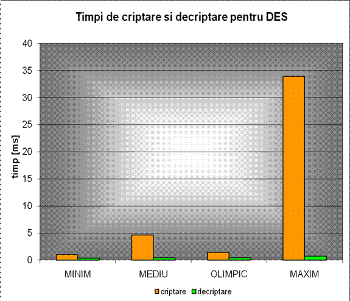
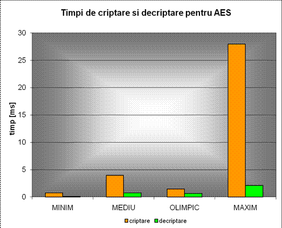
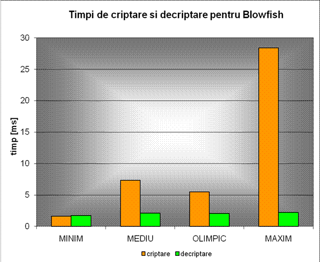
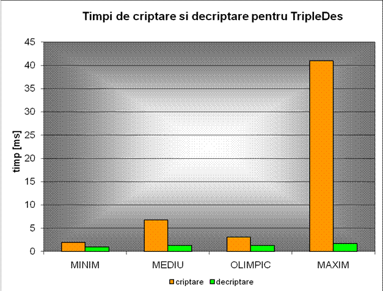
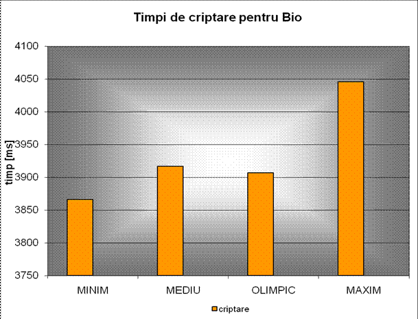
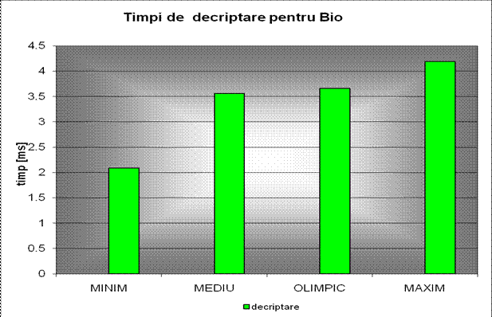
Rezultatele experimentale ale testelor efectuate pe Sistemul3 cu OS-Ubuntu sunt prezentate în tabelul şi diagramele următoare:
Tabel 1.3. Rezultatele testelor efectuate pe Sistemul 3 cu OS-Ubuntu
| Rezultatele analizei pentru OS-Ubuntu 10.04 | |||||||||||
| DES | Criptare | 12.64 | 0.9 | 0.61 | 0.59 | 0.61 | 1.2 | 0.61 | 0.62 | 0.54 | 0.56 |
| Decriptare | 1.24 | 0.45 | 0.44 | 0.45 | 0.43 | 0.55 | 0.43 | 0.43 | 0.42 | 0.41 | |
| AES | Criptare | 0.66 | 0.6 | 0.63 | 0.63 | 0.62 | 0.59 | 0.63 | 0.54 | 0.7 | 0.63 |
| Decriptare | 0.66 | 0.71 | 0.64 | 0.64 | 0.19 | 0.19 | 0.19 | 0.13 | 0.19 | 0.19 | |
| Blowfish | Criptare | 37.07 | 32 | 19 | 13 | 15 | 11 | 18 | 26 | 11 | 14 |
| Decriptare | 0.81 | 0.77 | 0.81 | 0.58 | 0.74 | 0.74 | 2.84 | 0.70 | 0.70 | 0.59 | |
| 3DES | Criptare | 14 | 11 | 17.7 | 10.21 | 10.11 | 10.1 | 10.45 | 10 | 10.08 | 13 |
| Decriptare | 0.77 | 0.79 | 0.78 | 0.6 | 0.6 | 0.63 | 0.71 | 0.62 | 0.61 | 0.6 | |
| BIO | Criptare | 1896 | 1848 | 1857 | 1846 | 1850 | 1852 | 1846 | 1850 | 1842 | 1850 |
| Decriptare | 2.62 | 13.1 | 1.83 | 1.31 | 1.57 | 1.31 | 1.57 | 1.57 | 2.62 | 2.62 | |
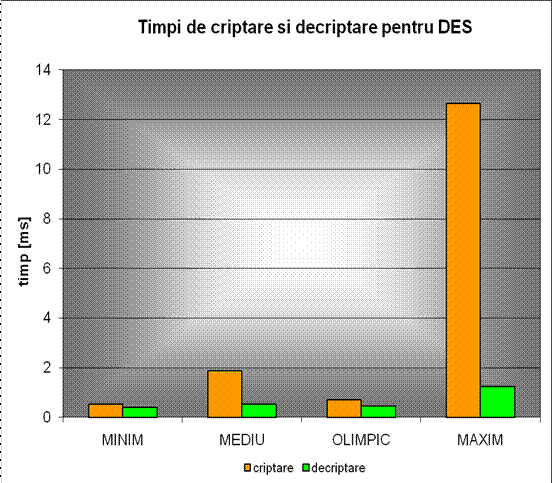
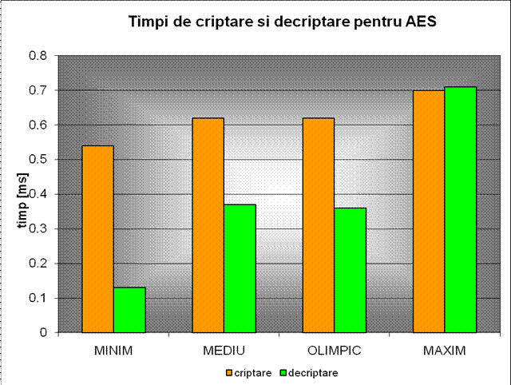
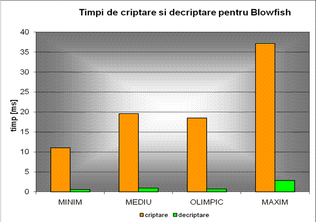
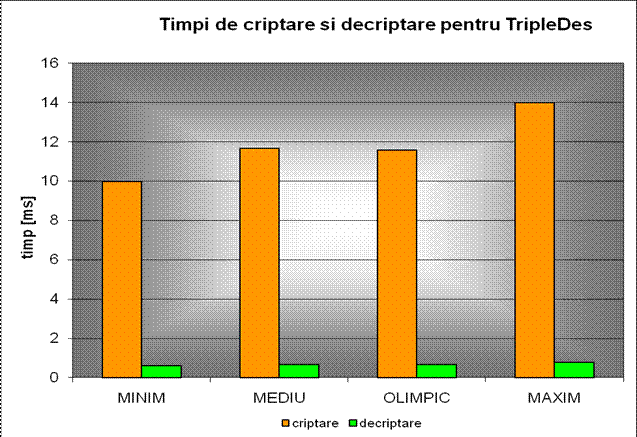
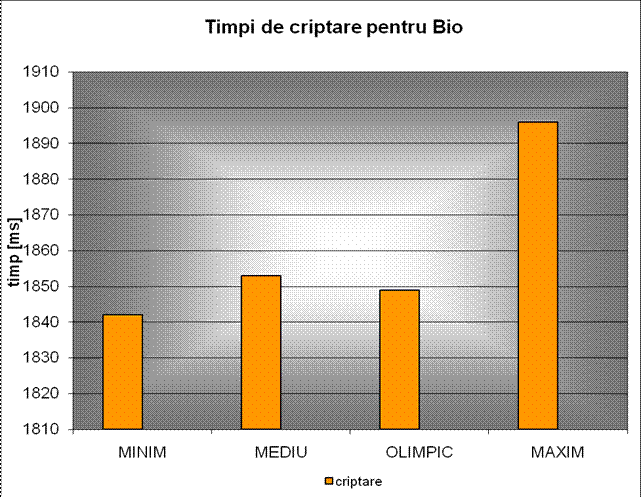
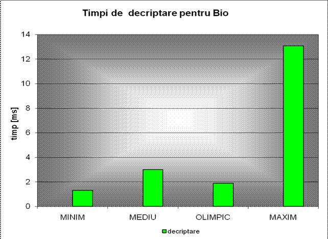
Se poate observa faptul că pe sistemele 1 şi 2 cu OS- Windows au loc variaţii mai mari ale timpilor de criptare şi decriptare. Sistemul 3 cu OS-Ubuntu pe platforma Linux prezintă o stabilitate mai mare deoarece variaţia timpilor este mai mică.
Algoritmul nou propus, bazat pe folosirea cromozomilor de ADN ca şi chei simetrice, necesită un timp de criptare mai ridicat decât algoritmii clasici.
2. Concluzii
Siguranţa în transmiterea datelor electronice constituie o cerinţă bine cunoscută care induce necesitatea de tehnologii noi şi moderne pentru securitatea aplicaţiilor software.
După cum criptografia este o tehnologie cheie pentru furnizarea securităţii informaţiei, scopul acestei analize a fost folosirea ştiinţei numita Bioinformatică in domeniul criptografiei pentru a implementa un algoritm de criptare, rezistent la atacuri cu resurse computaţionale foarte mari şi aproape infinite.
Încadrând acest algoritm în categoria algoritmilor simetrici, s-au putut face comparaţii a timpului necesar criptării, respectiv decriptării, cu alţi algoritmi simetrici precum DES, TripleDES, BlowFish şi AES.
Pentru implementarea şi exemplificarea algoritmului un cromozom a fost descărcat din NCBI GenBank. Cromozomii se folosesc ca şi cheie de sesiune de tip One-Time-Pad. Ei sunt alcătuiţi din molecule lungi de ADN şi conţin sute de baze (A, T, C, G). Au dimensiune mică si o capacitate mare de stocare. La implementare a fost utilizată secvenţa completă din Homo sapiens FOSMID clone ABC14-50190700J6, cromozomul x, în formatul FASTA.
In rezumat paşii criptarii sunt:
- Mesajul text este transformat în coduri ASCII
- Codurile ASCII sunt transformate în cod binar, fiecare cod ASCII reprezentat pe 8 biţi
- Se face transformarea din cod binar în cod ADN rezultând câte 4 baze ADN pentru fiecare caracter din textul original
- Caracterele astfel codate sunt căutate în cromozomul care reprezintă cheia de sesiune. Fiecare grup de 4 baze care reprezintă un caracter când e găsit în cromozom indecsul acelui loc e memorat intr-un vector de indecşi. Astfel pentru fiecare caracter vom avea un vector de indecşi.
- Criptotextul va fi alcatuit dintr-un şir de indecşi, câte un index pentru fiecare caracter ales în mod aleator din vectorii de indecşi.
La decriptare se foloseşte aceiaşi cheie, cromozom ca şi pentru criptarea mesajului. Fiecare index primit este folosit ca şi pointer spre codul caracterului în cromozomul cheie. Secvenţe de 4 baze din locaţiile precizate de indecşi se transformă din baze în numere care într-o serie de paşi inversă criptării devin caracterele mesajului decriptat.
Algoritmul propus prezintă urmatoarele avantaje:
- Sistemele de criptare care folosesc chei de criptare de tip OTP sunt cunoscute ca fiind perfect sigure. Algoritmul implementat foloseşte ca şi cheie de sesiune un cromozom uman dar orice secvenţă ADN a oricărei fiinţe vii poate fi folosită ca şi cheie de criptare. Astfel se poate exploata capacitatea de stocare a ADN-ului şi varieatatea secvenţelor pentru implementarea de chei OTP.
- Algoritmul tratează problema vulnerabilităţii la atacuri de frecvenţă. Pentru un caracter din textul în clar s-a obţinut un vector de indecşi care sunt folosiţi ca valori în criptotext în mod aleator. Acest lucru rezolvă problema frecvenţei de distribuţie a caracterelor într-un criptotext.
Acest algoritm împreună cu alţi algoritmi de cripatare simetrică au fost integraţi în aplicaţia Cypher cu scopul de a face o comparaţie între timpii de criptare şi decriptare a acestor algoritmi.
Algoritmii au fost testati pe 3 sisteme diferite cu scopul de a analiza variaţia timpilor de criptare pe sisteme cu OS-Windows1-32 biti, Windows2-64biti şi Ubuntu Linux. S-a observat că sistemul care foloseste SO Linux prezintă o stabilitate mai mare şi de aceea variaţia timpilor de criptare şi decriptare este mai mică.
S-a observat faptul că algoritmul nou propus necesită un timp mult mai ridicat de criptare decât algoritmii simetrici clasici DES, TripleDES, Blowfish şi AES.
Evoluţia domeniului IT şi necesitatea tot mai crescută a unor aplicaţii sigure conduc la apariţia tot mai multor tehnici de garantare a securităţii. În prezent sunt folosite diverse modele clasice bazate preponderent pe algoritmi matematici complecşi.
Biotehnologiile, implicit metodele bazate pe informaţia ADN, reprezintă modele care pot constitui importante direcţii în cercetare.
Algoritmul poate fi îmbunătăţit având în vedere următoarele:
- îmbunatăţirea algoritmului în vederea scăderii timpilor de criptare şi decriptare prin eficientizarea procesului de căutare a indecşilor în cromozomul folosit ca şi cheie
- implementarea algoritmului folosind framework-ul oferit de JCE (Java Cryptography Extension) şi JCA (Java Cryptography Arhitecture) în vederea dezvoltării unui nou Provider de servicii criptografice
3. Bibliografie
- Andreas Prlic; Andrew Yates; Spencer E. Bliven; Peter W. Rose; Julius Jacobsen; Peter V. Troshin; Mark Chapman; Jianjiong Gao; Chuan Hock Koh; Sylvain Foisy; Richard Holland; Gediminas Rimsa; Michael L. Heuer; H. Brandstatter-Muller; Philip E. Bourne; Scooter Willis , BioJava: an open-source framework for bioinformatics in 2012, Bioinformatics (2012) 28 (20): 2693-2695.
- T. Băjenescu, M. Borda. Securitatea în informatică și telecomunicații. Cluj-Napoca : Dacia, 2001.
- DotNetSlackers. An inside look at Symmetric Encryption. DotNetSlackers. [Interactiv] [Citat: 27 March 2009.] http://dotnetslackers.com/articles/security/AnInsideLookAtSymmetricEncryption.aspx.
- Lucks, Stefan. Attacking Triple Encryption. London: Springer-Verlag, 1998, Lecture Notes In Computer Science, Vol. 1372. ISBN:3-540-64265-X .
- NIST. Specification for the Advanced Encryption Standart. Computer Security Resource Center. [Interactiv] 26 November 2001. [Citat: 30 April 2009.] http://www.csrc.nist.gov/publications/fips/fips197/fips-197.pdf.
- Description of a New Variable-Length Key, 64-Bit Block Cipher (Blowfish). Schneier, Bruce. s.l. : Springer-Verlag, 1994, Fast Software Encryption, Cambridge Security Workshop Proceedings (December 1993).
- Savard, John. IDEA (International Data Encryption Algorithm). [Interactiv] [Citat: 4 May 2009.] http://www.quadibloc.com/crypto/co040302.htm.
- Genetics Home Reference. [Interactiv] U.S. National Library of Medicine. [Citat: 8 May 2009.] http://ghr.nlm.nih.gov/handbook/basics/dna.
- Tatiana Hodorogea, Mircea-Florin Vaida, BLOOD ANALYSIS AS BIOMETRIC SELECTION OF PUBLIC KEYS, 7 th International Carpathian Control Conference ICCC’2006, Ostrava – Beskydy, Czech Republic, May 29-31, 2006, pp. 675-678, ISBN 80-248-1066-2
- How to Implement a Provider for the JavaTM Cryptography Extension. Sun Microsystems. [Interactiv] [Citat: 7 March 2009.] http://java.sun.com/j2se/1.4.2/docs/guide/security/jce/HowToImplAJCEProvider.html.
- Microsystems, Sun. Developer Resources for Java Technology. Certification Form for CSPs. [Interactiv] [Citat: 7 March 2009.] http://java.sun.com/j2se/1.4.2/docs/guide/security/jce/CertForm.txt.
- A Brief History of Cryptography. Cypher Research Laboratories Pty. Ltd. [Interactiv] [Citat: 14 April 2009.] http://www.cypher.com.au/crypto_history.htm.
- Java Cryptography Architecture. [Interactiv] Sun Microsystems. [Citat: 22 March 2009.] http://java.sun.com/j2se/1.4.2/docs/guide/security/CryptoSpec.html.
- Andreica, Alina. Internet Teorie. Facultatea de Studii Europene, Universitatea Babes-Bolyai Cluj-Napoca. [Interactiv] [Citat: 30 March 2009.] http://www.euro.ubbcluj.ro/~alina/cursuri/internet-teorie/.
- Ashish Gehani, Thomas LaBean, John Reif. DNA-Based Cryptography. s.l. : DIMACS Series in Discrete Mathematics and Theoretical Computer Science, 1999, Vol. 54. ISBN 0-8218-2053-2.
- DNA Alphabet. VSNS BioComputing Division. [Interactiv] [Citat: 12 April 2009.] http://www.techfak.uni-bielefeld.de/bcd/Curric/PrwAli/node7.html#SECTION00071000000000000000.
- Hook, David. Beginning Cryptography with Java. s.l. : Wrox Press, 2005. ISBN: 0764596330.
- Knudsen, Jonathan B. Java Cryptography. s.l. : O’Reilly, 1998. ISBN: 1-56592-402-9.
- Wagner, Neal R. The Laws of Cryptography with Java Code. [PDF] 2003.
- Web Architecture. [Interactiv] School of Information, UC Berkeley. [Citat: 27 May 2009.] http://dret.net/lectures/web-fall08/.
- Cloud Garden – Jigloo GUI Builder. Cloud Garden (Java Resources) . [Interactiv] Cloud Garden. [Citat: 20 March 2009.] http://www.cloudgarden.com/jigloo/.
- Konheim, Alan G.Computer Security and Cryptography. New Jersey: John Wiley & Sons, Inc., 2007. ISBN-10: 0-471-94783-0.
- Hodorogea Tatiana, Vaida Mircea-Florin, COMPLEXITY OF DNA ENCRYPTION SYSTEM AS A SUBSET OF JAVA CRYPTOGRAPHY EXTENSION, IASTED International Conference on Biomedical Engineering (BioMed 2008), 13-15 Feb., Innsbruck, Austria, paper 601-167, pp. 19-24
- Mircea-F. Vaida, Alexandra Vanea, Radu Terec, Raport tehnic privind Securitatea alternativa folosind mediul Java, RTH 09005, septembrie 2009, Laborator Helios, Director Mircea-Florin Vaida, Univ. Tehnica din Cluj-Napoca, ISSN: 1453-875X, pp. 82, ISSN 1454-0665
- Mircea-Florin Vaida, Radu Terec, Lenuta Alboaie, Alternative DNA Security using BioJava, Conference SDIWC – DICTAP2011, Univ. de Bourgogne, Dijon, France, 21-23 Juin, 2011, pp.455-469
- BIOJAVA: COOKBOOK: CORE: OVERVIEW. – opensource development, http://biojava.org/wiki/BioJava:CookBook:Core:Overview